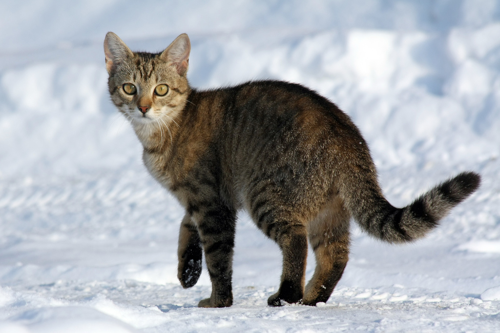

Welcome!
The domestic cat (Felis catus) or Felis silvestris catus, informally Felis domesticus, is a small, usually furry, domesticated, carnivorous mammal. It is often called the housecat when kept as an indoor pet, or simply the cat when there is no need to distinguish it from other felids and felines. Cats are valued by humans for companionship and their ability to hunt vermin and household pests. They are primarily nocturnal.